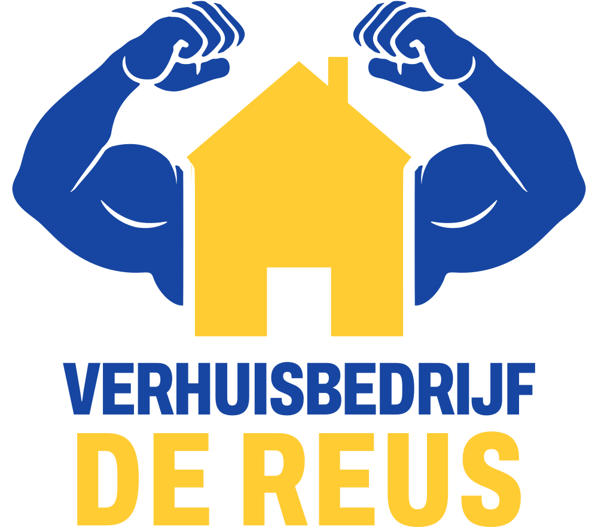

Voor en na
Wens van de klant: de armen hoger en over het huis, en de biceps iets groter. Beide logo's staan hieronder op precies dezelfde schaal.
- De armen gaan omhoog en draaien om de schouder iets naar binnen: de ellebogen komen hoger en de vuisten staan boven het dak.
- De armen liggen vóór het huis. Waar ze over de dakrand komen, wordt het huis uitgespaard met dezelfde witte naad als nu langs de muur.
- De arm blijft de originele tekening; alleen de biceps is ongeveer 20 % groter.
- Huis, woordmerk en kleuren zijn niet veranderd. Het logo wordt iets hoger (828 → 881) en blijft even breed.
